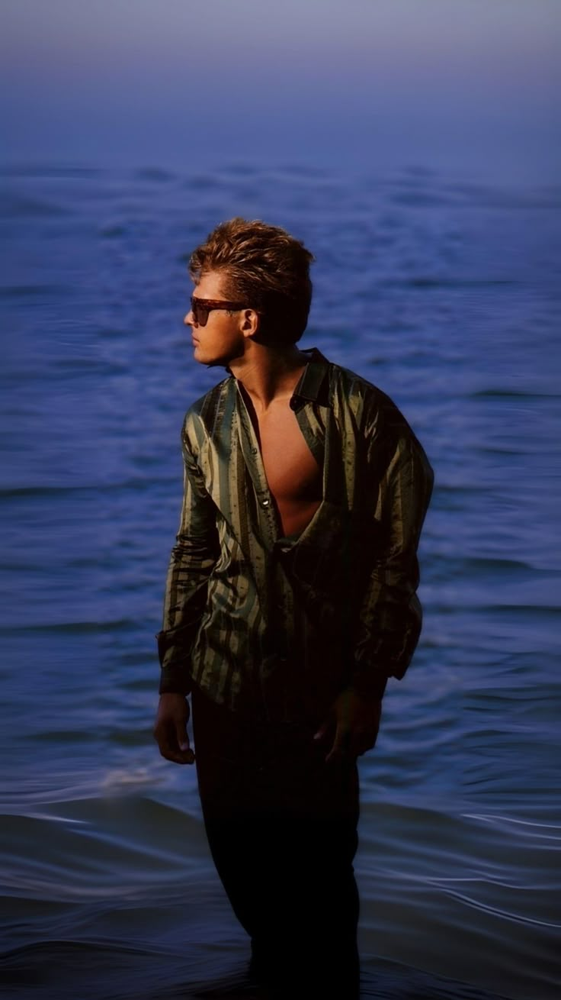
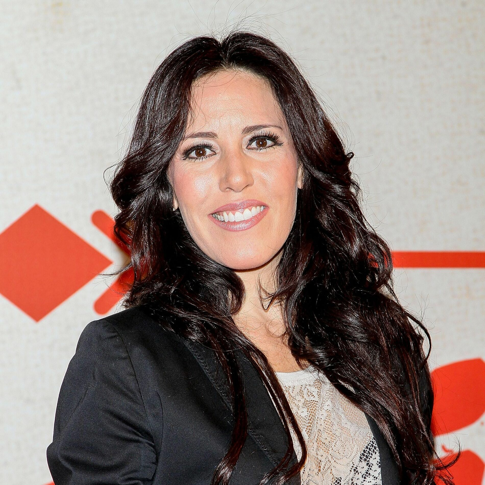
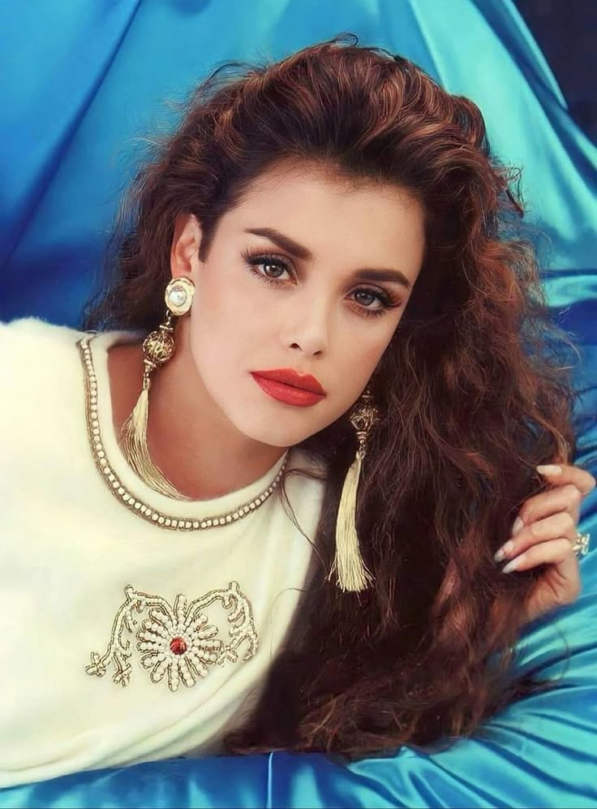
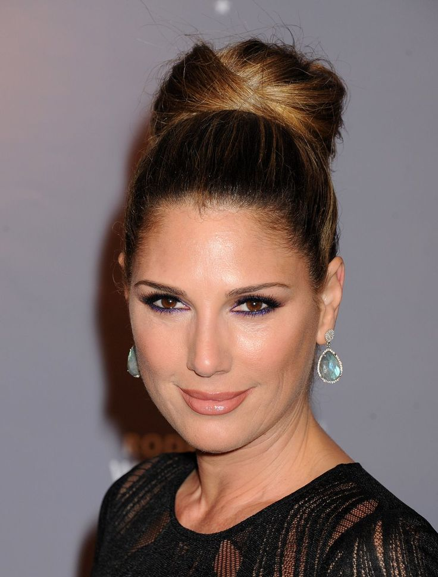
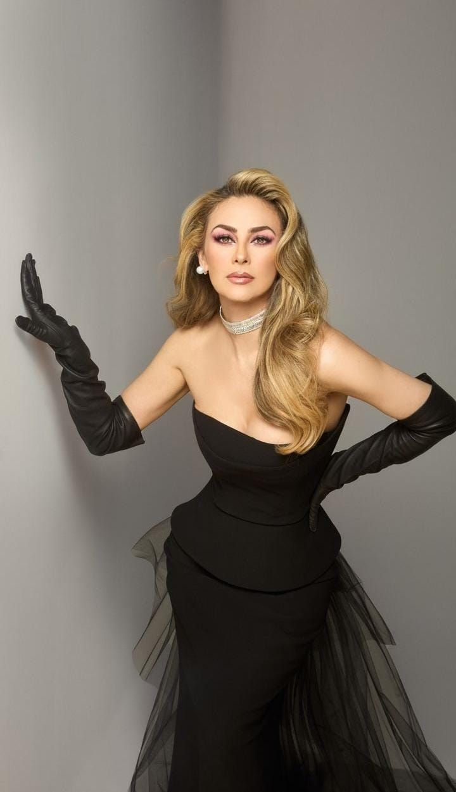
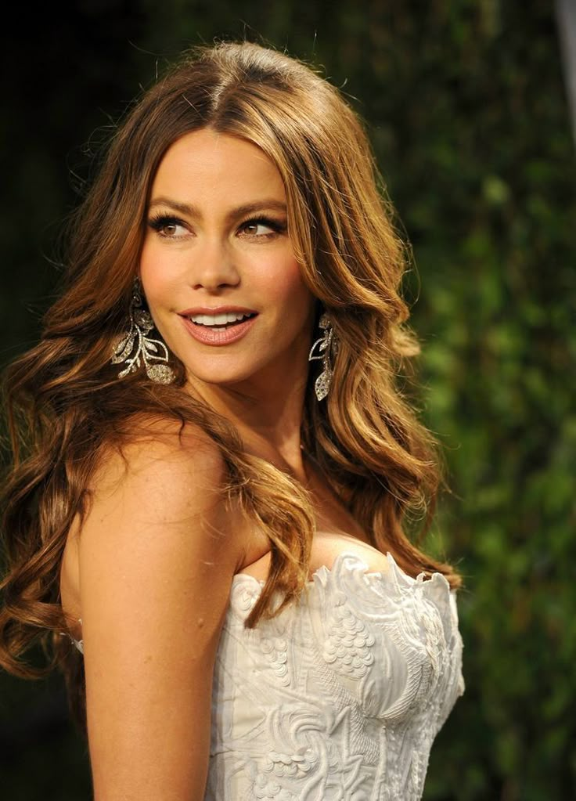
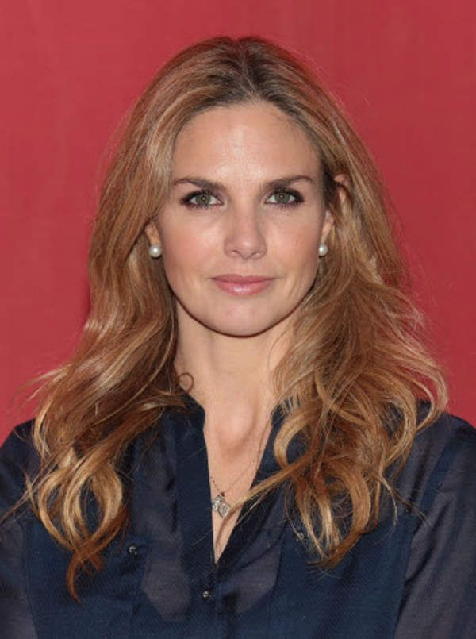

Luis Miguel, conocido como "El Sol de México", ha tenido una vida amorosa muy mediática y comentada a lo largo de su carrera. Aquí tienes un resumen de algunos de sus romances más conocidos:
Fue una de sus primeras relaciones conocidas, en los años 80. Ella era fotógrafa y aparece en el video de la canción "Cuando calienta el sol".

Actriz y cantante mexicana. Tuvieron una relación breve, pero significativa: es madre de Michelle Salas, hija de Luis Miguel.

Actriz y cantante mexicana. Se ha dicho que tuvo un romance con Luis Miguel cuando él era muy joven, algo polémico por la diferencia de edad.

Modelo y presentadora cubano-estadounidense. Tuvieron una relación en los años 90, que terminó pero años después volvieron brevemente.
Uno de sus romances más famosos internacionalmente. Estuvieron juntos entre 1998 y 2001. Carey incluso habla de él en su autobiografía como una relación intensa.

Actriz y cantante mexicana. Fue una de las relaciones más estables de Luis Miguel. Tuvieron dos hijos juntos: Miguel y Daniel. Se separaron alrededor de 2009.

Quién es: Actriz y modelo colombiana. Aunque no fue confirmada oficialmente, se rumorea que tuvieron un breve romance a principios de los años 2000. Fueron vistos juntos en algunos eventos sociales.

En 2023, surgieron fotos y rumores de que tuvo una cita con Luis Miguel en Madrid. Aunque ambos lo negaron, la prensa del corazón lo cubrió ampliamente.